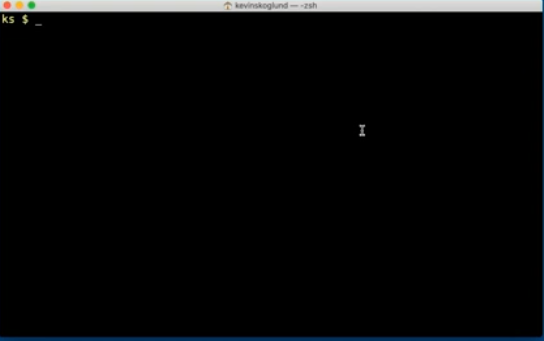
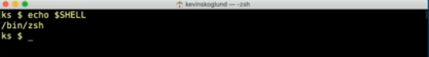
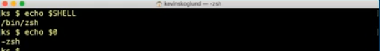
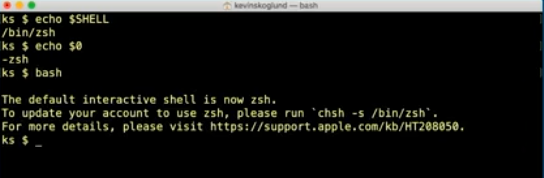
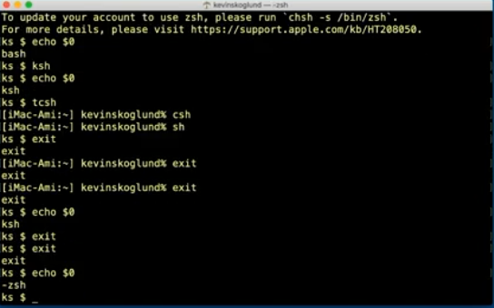

the kernal comes with version of unix you have
the shell is how we interact with the kernel, it's what we see when we open up a terminal window
the shell sends request to the kernel, the kernel does its job, and the result is returned back to the shell so we can interact with them again
the window is the shell
echo $SHELL will return the location of the current shell being used
echo $0 will return the current shell
to switch into a shell simply type in the shell you wish to you
IMPORTANT NOTE, everytime you switch shells you enter a shell within a shell,
if you switch shells many times then exit, you will ONLY EXIT into the previous shell!!
